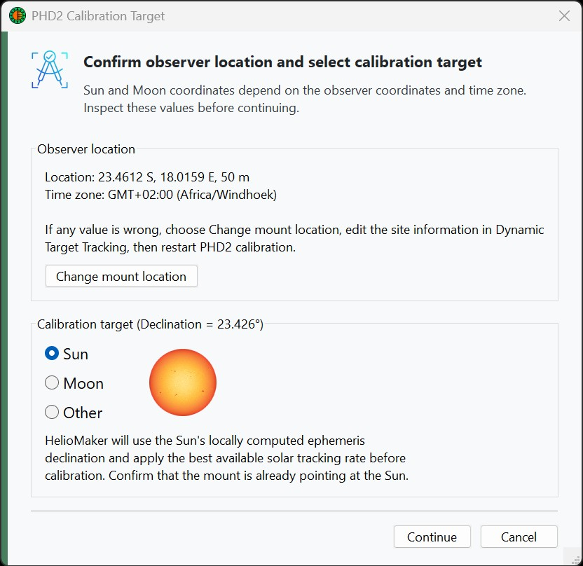

When PHD2 calibration is started from HelioMaker, HelioMaker shows a pre-flight dialog before the calibration run begins. This dialog gives the user a chance to confirm the calibration target and review the information HelioMaker will use for the calibration request.

PHD2 calibration depends on the target declination. For ordinary nighttime star calibration, this is usually derived from the mount position. During solar or lunar imaging, however, the mount's star-alignment model may not always be accurate enough to provide the best declination value for calibration.
HelioMaker avoids this problem for the Sun and Moon by computing the target declination from real-time solar or lunar ephemeris data. This gives PHD2 a more reliable calibration declination and reduces dependence on the mount's internal alignment model.
The dialog lets you select the object type used for calibration:
HelioMaker remembers the last selected object type and restores it the next time this dialog is opened.
This dialog is used whenever calibration is started from HelioMaker, including manual calibration from the main screen and calibration initiated as part of a sequence when calibration at sequence start is enabled.